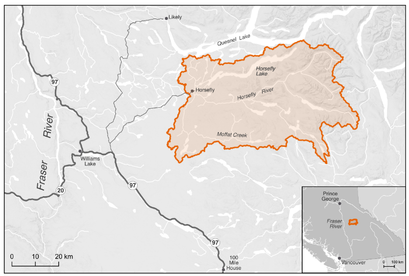
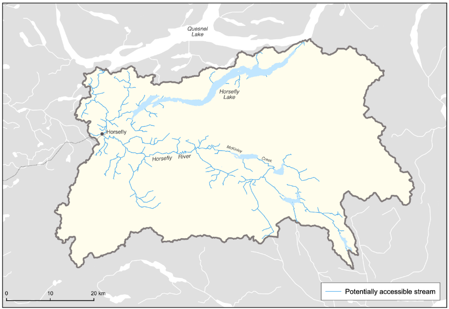

| Barrier Types | Extent | Severity | Irreversibility | Overall Threat Rating: |
|---|---|---|---|---|
| Road-Stream Crossings | Low | Very High | Medium | Very High |
| Lateral Barriers | High | Very High | High | High |
| Small Dams(<3m height) | Low | Medium | High | Medium |
| Trail-stream Crossings | Low | Low | Medium | Low |
| Natural Barriers | Medium | High | Low | Low |
Plan Purpose, Approach, and Scope
The following Watershed Connectivity Remediation Plan (WCRP) represents the culmination of a one-year collaborative planning effort, including field assessments, the overall aim of which is to build collaborative partnerships within the Horsefly River watershed to improve connectivity for anadromous salmon and the livelihoods that they support, including the continued sustenance, cultural, and ceremonial needs of the Northern Secwépemc people. This 20-year plan was developed to identify priority actions that the Horsefly River WCRP planning team (see Table 1 for a list of team members) will undertake between 2021-2040 to conserve and restore fish passage in the watershed, through crossing remediation, lateral barrier remediation, dam remediation, and barrier prevention strategies.
WCRPs are long-term, actionable plans that blend local stakeholder and rightsholder knowledge with innovative GIS analyses to gain a shared understanding of where remediation efforts will have the greatest benefit for anadromous salmon. The planning process is inspired by the Conservation Standards (v.4.0), which is a conservation planning framework that allows planning teams to systematically identify, implement, and monitor strategies to apply the most effective solutions to high priority conservation problems. There is a rich history of connectivity and fish habitat planning and remediation work in the Horsefly River watershed that this WCRP builds upon, including work undertaken by the BC Fish Passage Technical Working Group, the Northern Secwepemc te Qelmucw (NStQ) and member communities, the Horsefly River Roundtable, and other local organizations (Ltd. (2018); S. Hocquard, Steve Hocquard Consulting, pers. comm.).
The planning team compiled existing barrier location and assessment data, habitat data, and previously identified priorities, and combined this with local and Indigenous knowledge to create a strategic watershed-scale plan to improve connectivity. To expand on this work the Horsefly River WCRP planning team applied the WCRP planning framework to define the “thematic” scope of freshwater connectivity and refine the “geographic” scope to identify only those portions of the watershed where barrier prioritization will be conducted, and subsequent remediation efforts will take place. Additionally, the team selected target fish species, assessed their current connectivity status in the watershed, defined concrete goals for gains in connectivity, and developed a priority list of barriers for remediation to achieve those goals. While the current version of this plan is based on the best-available information at the time of publishing, WCRPs are intended to be “living plans” that are updated regularly as new information becomes available, or if local priorities and contexts change. As such, this document should be interpreted as a current snap-shot in time, and future iterations of this WCRP will build upon the material presented in this plan to continuously improve barrier remediation for migratory fish in the Horsefly River watershed. For more information on how WCRPs are developed, see Mazany-Wright, Noseworthy, et al. (2021).
Field assessments were completed for 20 longitudinal barriers on the preliminary barrier list during the summer of 2021, followed by a series of WCRP Update Workshops in winter 2021.The aim of these workshops was for the team to receive updates on progress made during the field season, review assessment results and identify priority barriers, revise the connectivity status assessment and goals, and update the Operational Plan for 2022.
Vision Statement
Healthy, well-connected streams and rivers within the Horsefly River watershed support thriving populations of migratory fish, improving the overall ecosystem health of the watershed. In turn, these fish provide the continued sustenance, cultural, and ceremonial needs of the Northern Secwépemc people, as they have since time immemorial. Both residents and visitors to the watershed work together to mitigate the negative effects of anthropogenic aquatic barriers, improving the resiliency of streams and rivers for the benefit and appreciation of all.
Project Scope
Connectivity is a critical component of freshwater ecosystems that encompasses a variety of factors related to ecosystem structure and function, such as the ability of aquatic organisms to disperse and/or migrate, the transportation of energy and matter (e.g., nutrient cycling and sediment flows), and temperature regulation Seliger and Zeiringer (2018). Though each of these factors are important when considering the health of a watershed, for the purposes of this WCRP the term “connectivity” is defined as the degree to which aquatic organisms can disperse and/or migrate freely through freshwater systems. Within this context, connectivity is primarily constrained by physical barriers, including anthropogenic infrastructure such as dams, weirs, and stream crossings, and natural features such as waterfalls and debris flows. This plan is intended to focus on the direct remediation and prevention of localized, physical barriers instead of the broad land-use patterns that are causing chronic connectivity issues in the watershed. The planning team decided that the primary focus of this WCRP is addressing barriers to both longitudinal connectivity (i.e., along the upstream-downstream plane) and lateral connectivity (i.e., connectivity between the mainstem and adjacent riparian wetlands and floodplains) due to the importance of maintaining fish passage to spawning, rearing, and overwintering habitat in the watershed.

The primary geographic scope of this WCRP is the Horsefly River watershed, located in the upper Fraser River drainage basin in central British Columbia (Figure 1). The scope constitutes the Horsefly River “watershed group” as defined by the British Columbia Freshwater Atlas (FWA). A consistent spatial framework was necessary to undertake a watershed selection process at the provincial scale to identify target watersheds to improve connectivity for salmon. The Horsefly River watershed was identified by the BC Fish Passage Restoration Initiative as one of four target watersheds for WCRP development Mazany-Wright, Norris, et al. (2021b). The Horsefly River watershed has a drainage area of 276,603 ha, spanning from the Quesnel Highlands in the southeast to the confluence with Quesnel Lake in the northwest. Culturally and economically important populations of Chinook Salmon, Coho Salmon, and Sockeye Salmon are all found in the watershed, which historically supported Indigenous sustenance and trading economies (W. L. F. Nation. (2021), X. F. Nation. (2021)).
The Horsefly River watershed comprises parts of Secwepemcúl’ecw, the traditional territory of the Northern Secwepemc te Qelmucw (NStQ), represented by the Northern Shuswap Tribal Council and four member communities or autonomous nations:
Xatśūll Cmetem’ (Soda Creek First Nations)
Stswēceḿc Xgāt’tem (Canoe Creek/Dog Creek First Nations)
T’ēxelc (Williams Lake First Nation)
Tsq’ēsceń (Canim Lake First Nation)
The geographic scope of this WCRP was further refined by identifying “potentially accessible” stream segments, which are defined as streams that target species should be able to access in the absence of anthropogenic barriers (Figure 2). Potentially accessible stream segments were spatially delineated using fish species observation and distribution data, as well as data on “exclusionary points”. These include waterfalls greater than 5 m in height, gradient barriers based on species-specific swimming abilities, and watershed exclusion areas, which are portions of the watershed where barrier remediation efforts should not occur. These maps were explored by the planning team to incorporate additional local knowledge, ensure accuracy, and finalize the constraints on potentially accessible stream segments. The planning team identified certain tributaries to the mainstem Horsefly River as “watershed exclusion areas”, which were excluded from further consideration under this plan, due to intermittent or insufficient flows to support restoring connectivity for the target species. The geographic scope was further refined based on several confirmed impassable waterfalls and modelled gradient barriers. Specifically, there are two impassable waterfalls that severely limit potentially accessible habitat: one on the mainstem Horsefly River approximately 4 km upstream of the confluence with McKinley Creek, and the second on Moffat Creek approximately 5 km upstream from where it flows into the Horsefly River. All stream segments not identified as potentially accessible were removed from the scope for further consideration. The “constrained geographic scope” formed the foundation for all subsequent analyses and planning steps, including mapping and modelling useable habitat types, quantifying the current connectivity status, goal setting, and action planning Mazany-Wright, Norris, et al. (2021a).

Target species
Target species represent the ecologically and culturally important species for which habitat connectivity is being conserved and/or restored in the watershed. In the Horsefly River watershed, the planning team selected Anadromous Salmon as the target species group, which comprises Chinook Salmon, Coho Salmon, and Sockeye Salmon. The selection of these target species was driven primarily by the targets species of the primary fund supporting this planning work.
Anadromous Salmonids
Anadromous salmon are cultural and ecological keystone species that contribute to productive ecosystems by contributing marine-derived nutrients to the watershed and forming an important food source for other species. Salmon species are sacred to the NStQ, having sustained life, trading economies, and culture since time immemorial (W. L. F. Nation. (2021), X. F. Nation. (2021), N. Singi pers. comm.). The stewardship of the resources and fisheries in their traditional territories are imbued in the spirit of the NStQ through a symbiotic relationship based on respect – the NStQ never take more salmon than is needed and there is no waste. The entirety of the salmon is used - smoked and dried to sustain the NStQ through the winter months, the roe harvested for consumption, salmon oil rendered to be stored and traded, and the skin used to store the oil (Wilson, Twohig, and Dahlstrom (1998), X. F. Nation. (2021), N. Singi pers. comm.). The salmon runs begin to return to the Horsefly River watershed in early August, and the NStQ traditionally celebrate and feast at this time. The harvest of the salmon strengthens the cultural connection to the land and the waters, providing an important food source for communities and the opportunity to pass knowledge and ceremony to future generations through fishing and fish processing (W. L. F. Nation. (2021)`, X. F. Nation. (2021)).
Anadromous salmon populations in the Horsefly River watershed have declined significantly in the past few decades, with the populations of all three focal species being listed as Threatened or Endangered by the Committee On the Status of Endangered Wildlife In Canada (COSEWIC). This has been exacerbated by the Big Bar landslide on the Fraser River in 2019, leading the four NStQ communities to voluntarily close the salmon fishery from 2019-2022. The stewardship of their waters continues through the work of the NStQ member communities and the Northern Shuswap Tribal Council. See Appendix A for maps of modelled anadromous salmon habitat in the Horsefly River Watershed.
Chinook Salmon | Kekèsu | Oncorhynchus tshawytscha
Chinook Salmon are the first to return each year, usually in early August DFO (1991), and have the most limited distribution within the watershed. Known spawning occurs in parts of the Horsefly River mainstem above the confluence with the Little Horsefly River and throughout McKinley Creek as far as Elbow Lake (DFO (1991), S. Hocquard, pers. comm.). Important rearing systems include Patenaude Creek, Kroener Creek, Black Creek, Woodjam Creek, Deerhorn Creek, and Wilmot Creek (S. Hocquard, pers. comm.).
Coho Salmon | Sxeyqs | Oncorhynchus kisutch
Coho Salmon are the most widely distributed of the three focal species in the watershed, with the ability to migrate into smaller, upper tributary systems DFO (1991). Spawning occurs in the Little Horsefly River between Gruhs Lake and Horsefly Lake, McKinley Creek below McKinley Lake, Woodjam Creek, Patenaude Creek, Tisdall Creek, and Black Creek. Rearing fry and juveniles have been observed in the Little Horsefly River, Patenaude Creek, and McKinley Creek up to Bosk Lake (DFO (1991), S. Hocquard pers. comm.).
Sockeye Salmon | Sqlelten7ùwi | Oncorhynchus nerka
Sockeye Salmon have historically been the most abundant of the three focal species in the watershed, though the population has seen significant declines in recent years (DFO (1991), S. Hocquard pers. comm.). Sockeye Salmon spawning is known to occur throughout the Horsefly River (up to the impassable falls), in the Little Horsefly River between Gruhs Lake and Horsefly Lake, Moffat Creek (up to the impassible falls), and McKinley Creek up to Elbow Lake (Pacific-Salmon-Foundation (2020), DFO (1991), S. Hocquard pers. comm.). Additionally, a spawning channel aimed at enhancing the Sockeye Salmon population was constructed by Fisheries and Oceans Canada in 1989 DFO (1991). Currently, there are no Sockeye Salmon rearing in the Horsefly River watershed – all emergent fry migrate down to Quesnel Lake.
Barrier Types
The following table highlights which barrier types pose the greatest threat to anadromous salmon in the watershed. The results of this assessment were used to inform the subsequent planning steps, as well as to identify knowledge gaps where there is little spatial data to inform the assessment for a specific barrier type.
Small Dams (<3 m height)
There are 9 mapped small dams on “potentially accessible” stream segments in the watershed, blocking a total of 7.91 km (~2.23% of the total habitat) of modelled spawning and rearing habitat for anadromous salmon, resulting in a medium extent. The extent rating of these structures was confirmed by the planning team. There are two known fish-passage structures in the watershed, including on the dam at the outlet of McKinley Lake. The remaining dams likely block passage for anadromous salmon and would require significant resources to remediate. However, due to the limited extent of dams in the watershed, a final pressure rating of Medium was assigned. Four small dams were identified on the priority barrier list (see Appendix B). Three of the dams require further assessment and confirmation of upstream habitat quality, and the dam observed at the outlet of Kwun Lake does not exist.
Road-stream Crossings
Road-stream crossings are the most abundant barrier type in the watershed, with 18 assessed and modelled crossings located on stream segments with modelled habitat. Demographic road crossings (highways, municipal, and paved roads) block 7.91 km of habitat (~2% of the total blocked habitat), with 67% of assessed crossings having been identified as barriers to fish passage. Resource roads block 7.91 km of habitat (~2%), with 67% of assessed crossings having been identified as barriers. The planning team felt that the data was underestimating the severity of road-stream crossing barriers in the watershed, and therefore decided to update the rating from High to Very High. The planning team also felt that an irreversibility rating of Medium was appropriate due to the technical complexity and resources required to remediate road-stream crossings.
Trail-stream crossings
There is very little spatial data available on trail-stream crossings in the watershed, so the planning team was unable to quantify the true Extent and Severity of this barrier type. However, the planning team felt that trail-stream crossings are not prevalent within the watershed and that, where they do exist, they do not significantly impact passage for anadromous salmon. As most crossings will be fords or similar structures, remediation may not be required, or remediation costs associated with these barriers would be quite low. Overall, the planning team felt that the pressure rating for trail-stream crossings was likely Low; however, the lack of ground-truthed evidence to support this rating was identified as a knowledge gap within this plan.
Lateral Barriers
There are numerous types of lateral barriers that potentially occur in the watershed, including dykes, berms, and linear development (i.e., road and rail lines), all of which can restrict the ability of anadromous salmon to move into floodplains, riparian wetlands, and other off-channel habitats. No comprehensive lateral barrier data exists within the watershed, so pressure ratings were based on qualitative local knowledge. Lateral barriers are not thought to be as prevalent as road- or rail-stream crossings but are likely very severe where they do exist. Significant lateral barriers are known to occur along the mainstem of the Horsefly River, which disconnect the mainstem river from historic floodplain and off-channel habitat. Overall, the planning team decided that a High pressure rating adequately captured the effect that lateral barriers are having on connectivity in the watershed. Work to begin quantifying and mapping lateral habitat will begin in 2022-23, as described in the Operational Plan under Strategy 2: Lateral barrier remediation.
Natural Barriers
Natural barriers to fish passage can include debris flows, log jams, sediment deposits, etc., but natural features that have always restricted fish passage (e.g., waterfalls) are not considered under this barrier type. Natural barriers are difficult to include in a spatial prioritization framework due to their transient nature. The planning team identified known natural barriers that occur throughout the watershed, such as beaver dams and log jams. Generally, these natural barriers are only severe impediments to fish passage during low-flow years, but reduced baseflows have become more common in recent years. Based on this, the planning team felt that natural barriers will be severe most years where they exist, but are mostly reversible, resulting in an overall pressure rating of Low.